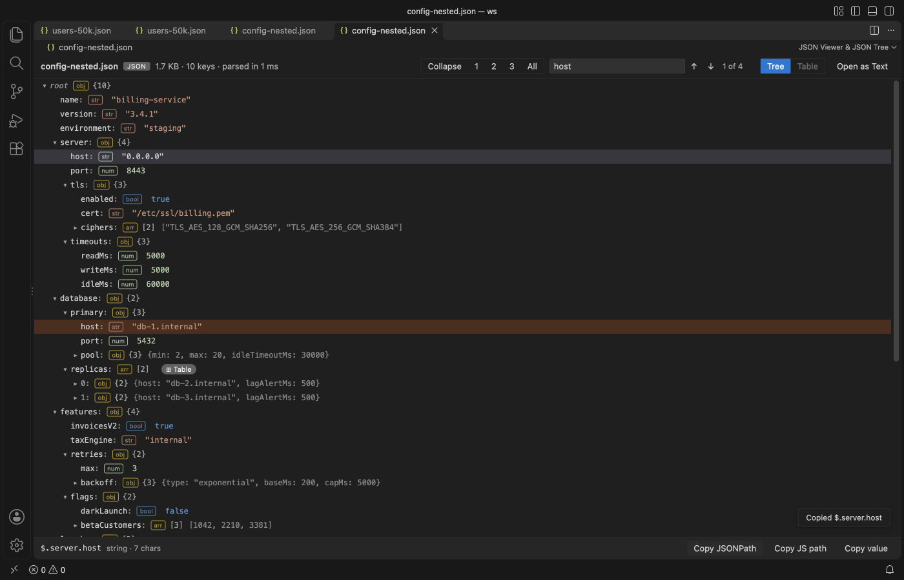

Open files in VS Code and Cursor / Developer files
Copy the JSONPath of a node in a JSON file
Writing a path such as $.orders[3].customer.id by hand is slow, and one wrong index picks the wrong node. Large JSON Viewer shows a JSON file in VS Code as a tree, and when you click a node the bottom bar shows its JSONPath, with buttons to copy it, the JS path such as data.orders[3].customer.id, or the value. It works on minified and large files up to 200 MB, and copying paths is free. Zovo Pro (USD 19 once) adds export of an array to CSV or JSON Lines and a compare of two JSON files, with 3 free tries each.
Free, MIT license. Extension ID zovo.zovo-json-tree-viewer, version 0.3.2. Needs VS Code 1.90.0 or newer.

Steps in VS Code
- Install Large JSON Viewer from the Marketplace, or press Ctrl+P (Cmd+P on macOS) and run
ext install zovo.zovo-json-tree-viewer. - Open the
.jsonfile and click the tree icon at the top right of the editor, or right-click the file in the Explorer and pick "Open in JSON Viewer". - Find the node. Use the 1, 2, 3 and All buttons to open the tree to a level, or type a key or value in Search and press Enter. Search covers the whole file and opens the parents of each match.
- Click the node. The bottom bar shows its JSONPath, such as
$.server.host, and its type. - Click Copy JSONPath. Click Copy JS path for code, such as
data.server.host, or Copy value for the value itself. - Press G (Go to line) to open the text editor beside the tree with the cursor on that key.
Where Zovo Pro saves time
The tree, Search, Copy JSONPath, Copy JS path, Copy value, the table, Go to line and reload on change are free. The file is opened read-only, and nothing is uploaded.
Once you have the path of an array of records, the next step is often a spreadsheet. Export Array to CSV or JSON Lines writes one row per item, with nested objects as dotted columns such as customer.address.city, exact big numbers, and text that Excel would run as a formula written as plain text. The other Pro tool, Compare Two JSON Files, lists every changed, added and removed value by path.
With Export Array to CSV or JSON Lines (Zovo Pro)
- Click the Table chip of the array, then Export CSV above the table, or right-click the file in the Explorer and pick "Zovo Pro: Export array to CSV or JSON Lines".
- From the Explorer or the Command Palette, pick the array if the file has more than one, then pick CSV or JSON Lines.
- Pick where to save the new file. The JSON file is not changed, and a try counts only when the file is written.
Export Array to CSV or JSON Lines works 3 times on your computer before it asks for a license, and a try counts only when you get a result. Opening a file shows no popup and no countdown.
Zovo Pro costs USD 19 once. It is not a subscription, and it turns on the Pro tools in every Zovo extension, not only Large JSON Viewer. After a card payment (Stripe) your license key shows on the next page. In VS Code, run "Zovo Pro: Enter Zovo Pro license key" from the Command Palette and paste it. The key is checked on your computer, with no network call. With GitHub Sponsors, pick the "$19 one time" tier, then run "Zovo Pro: I already paid: unlock with GitHub Sponsors" and sign in with the same GitHub account. With PayPal, send USD 19 with "Zovo Pro" in the note and the key comes by email within a day.
A team of 5: USD 59 once, by card or by PayPal. Every rule and every Pro tool is on the Zovo Pro page.
Steps in Cursor, Windsurf or VSCodium
- Open the Extensions view with Ctrl+Shift+X (Cmd+Shift+X on macOS).
- Search for
zovo.zovo-json-tree-viewerand click Install. Cursor, Windsurf and VSCodium install from Open VSX, where it is published aszovo/zovo-json-tree-viewer. - If your editor has no gallery, download the .vsix from the Open VSX page and run "Extensions: Install from VSIX...".
- Then use it the same way as in VS Code.
What Large JSON Viewer handles
.json,.jsonc,.json5,.geojson,.har,.ipynband.webmanifestfiles.- Keys that are not plain names, quoted as
$['odd keys']anddata["odd keys"]. - Strings that hold escaped JSON, with a JS path such as
JSON.parse(data.events[0].payload).user.id. - JSON that is selected in an editor or on the clipboard, with "Open Selection or Clipboard in JSON Viewer".
What it does not do
- Files over 200 MB are not opened. The setting
jsonTreeViewer.maxFileMBgoes up to 1 GB. - Search stops at 10,000 matches and Expand all at 1,000,000 visible rows, with a note.
- Inside an escaped JSON string the JSONPath just continues the outer path. Use the JS path for an exact address.
- It copies paths but does not run JSONPath queries.
Other options
- VS Code breadcrumbs. The bar above a JSON file shows the keys at the cursor, but has no command to copy them as a JSONPath.
- jq.
jq -c paths file.jsonlists every path as an array of keys, which you can search with grep.
Install counts and Open VSX status were checked on 13 November 2026. Descriptions in quotes are the extensions' own.
Questions
What is the difference between JSONPath and JS path?
JSONPath starts with $, as in $.items[3].id, for JSONPath libraries and API test tools. The JS path starts with data, as in data.items[3].id, for JavaScript code.
Does it work on a minified file?
Yes. The tree does not depend on line breaks, so a file on one line shows the same tree.
Does it work in Cursor or Windsurf?
Yes. Cursor, Windsurf and VSCodium install extensions from Open VSX. Search for the extension in their Extensions view and install it there.
More about Large JSON Viewer
Read the Large JSON Viewer page for every feature and setting, or the source code on GitHub.
Related guides
- Open a large JSON file in VS Code
- Keep 64-bit IDs exact in a JSON file
- Read a HAR file offline in VS Code
- Read your Claude Code history in VS Code
Support this work
If this extension saves you time, you can support the work on GitHub Sponsors. Monthly tiers start at $5, and one-time tiers start at $15. Sponsorship is optional, and the tool works the same without it.
Need your format supported?
Open a format request with a sample file, and I reply there whether it can be done. For USD 299 once, through this GitHub Sponsors tier, I add your file format or a missing feature to this extension, with tests, within 7 days.